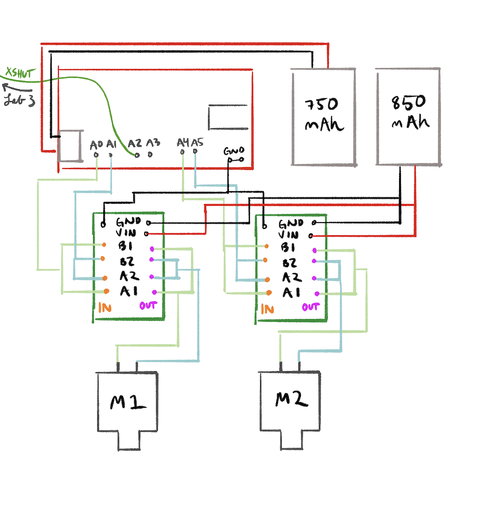
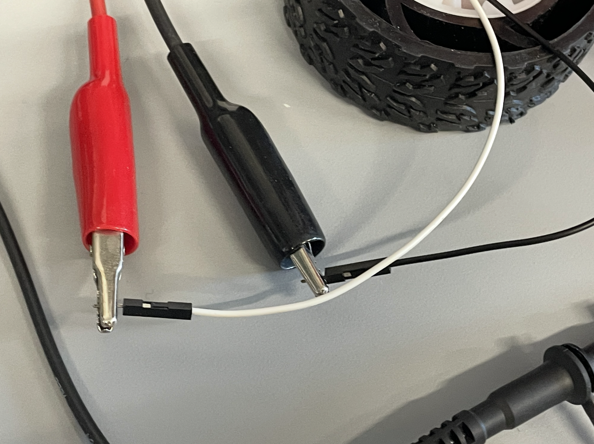
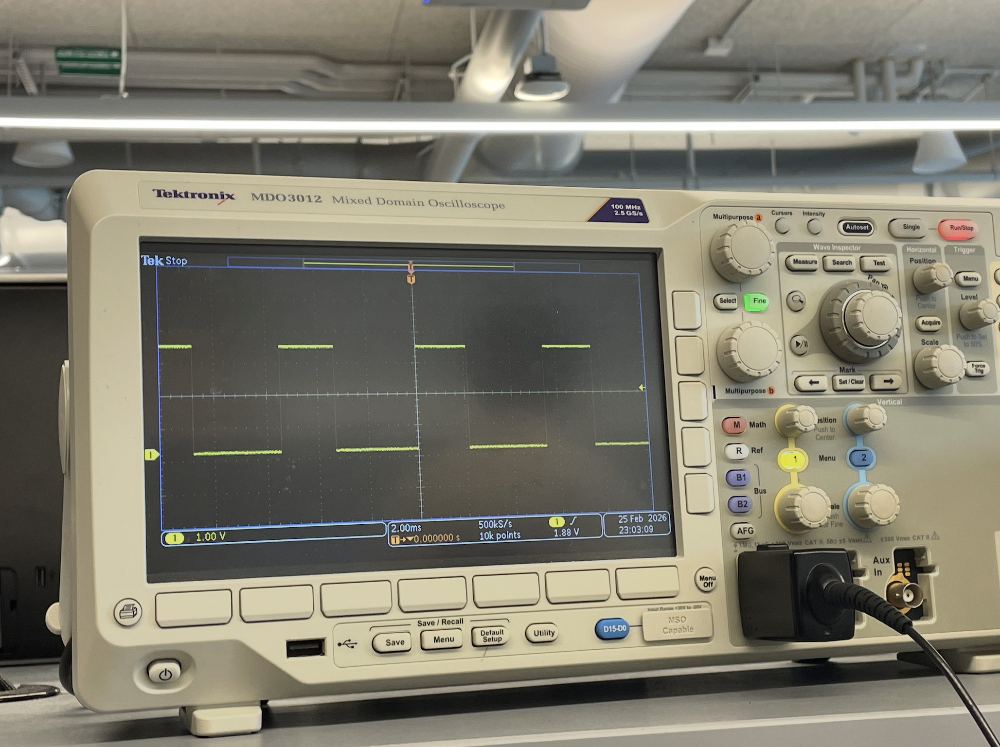

Lab 4: Motors and Open Loop Control
Overview
In this lab we wired the batteries with two motor controlers that were parallel-coupled inputs/outputs for higher current and did manual RC control as well as open loop control of the car.
Prelab
Motor Driver Wiring
Each dual motor driver has two H-bridge channels, but they're not very strong. Since we need more current, both channels on each driver are parallel-coupled with inputs tied together and outputs tied together. You can double the current without overheating because they're on the same clock on the IC. Motor A (pictured on the right, will be on left) is controlled by pins 4 (forward) and A5 (reverse). Motor B (pictured left, will be on the right) uses pins A1 (forward) and A2 (reverse). These were chosen because they are all PWM-capable (I checked this time!) and easy to keep track of.

Separate Batteries
The Artemis and the motors are powered from separate batteries for simplicity and also so the motor isn't underpowered. It isolates things, which is good because motors draw large, sudden currents right when starting or stalling, which then causes voltage drops which could reset the artemes or brown it out. All grounds are grounded for common reference.
Lab Tasks
Power Supply and Oscilloscope Setup
AnalogWrite was used to generate PWM signals for the driver, with an oscilliscope connected.

// PWM test: ramp motor speed
analogWrite(MOTA_FWD, 128); // 50% duty cycle
analogWrite(MOTA_REV, 0);
Single Motor — Both Directions
With the car on its side and wheels elevated, the motor was tested in both forward and reverse. The code sets one pin HIGH and the other LOW to control direction via the H-bridge.
// Forward
analogWrite(MOTA_FWD, 150);
analogWrite(MOTA_REV, 0);
delay(2000);
// Reverse
analogWrite(MOTA_FWD, 0);
analogWrite(MOTA_REV, 150);
delay(2000);Video: Single motor spinning forward and reverse with car on its side.
Both Motors — Battery Powered
After verifying each motor individually, both were connected and powered from the 850mAh battery. The code runs both motors forward, then reverse, then spins in each direction to confirm independent control.
Video: Both wheels spinning with 850mAh battery powering the motor drivers.
Car Assembly
All components were aproximately installed inside the chassis, with further refinedments in the process of being designed. The motor drivers are secured with tape near each motor to keep wire runs short and reduce EMI, and are twisted together for that purpose as well. The Artemis sits on the othe side with the QWIIC breakout board, and the 850mAh battery is tucked underneath. Nothing sticks out past the wheels so the car can flip without damage and the cover goes back on. Right now the sensors are inside but I will be cutting holes in the top half of the car to fit them later.

Lower PWM Limit
The PWM was ramped up slowly while the car sat on the ground. The car started moving forward at a PWM value of approximately [fil this]. For on-axis turns, the minimum was around [fill this]. As we were notified, starting from rest required a slightly higher PWM than keeping the robot in motion due to what I assume to be static friction being higher than kinetic friction.
Calibration and Straight Line
Without calibration, the robot drifted [LEFT/RIGHT] due to slight differences in motor output. After testing, a calibration factor of [FILL] was applied to the [LEFT/RIGHT] motor. This means its PWM is multiplied by that factor to match the other side. The robot was then able to follow a straight line of tape for [FIL:L]m with the body of the car over the line.
float CAL_FACTOR = 1.0; // UPDATE with my value
int left_speed = (int)(BASE_SPEED * CAL_FACTOR);
int right_speed = BASE_SPEED;
drive(left_speed, right_speed);Video: Robot driving straight along tape line for []m after calibration.
Open Loop Control
I made a pre-programmed sequence to be loaded onto the Artemis: drive forward, turn right 90°, drive forward, turn left 90°, drive forward, spin 360°, then reverse. All movements were timed and the robot stops automatically at the end of the sequence so it doesn't run away.
// Open loop sequence (excerpt)
drive(100, 100); // forward
delay(1500);
stop(); delay(300);
drive(100, -100); // right
delay(500);
stop(); delay(300);
drive(100, 100); // forward
delay(1500);
stop(); delay(300);
drive(150, -150); // spin (wheeeee)
delay(1200);
drive(-80, -80); // reverse
delay(1000);
stop();Video: Open loop untethered control demo showing forward driving, turns, and a spin.
Discussion
Collaborations: I used a soldering iron from my friend from outside of class and bought solder to use one it, which let me do a lot of last minute work. I also had instructional help from Rajarshi Das, mostly confirming my wiring questions. I used past diagrams from Brooke Hudson and Anunth Ramaswami to know how to create mine. As always, Claude to debug my code, explain some concepts, and help create the website html.